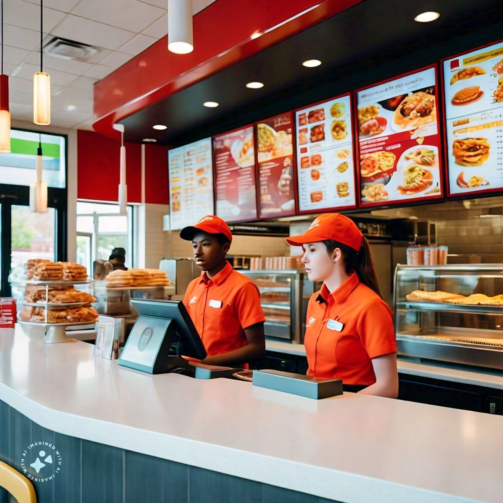

The Allure of Fast Food: A Tasty Convenience or a Recipe for Disaster?
Fast food - the ultimate convenience in today's hectic world. A quick bite, a satisfying meal, or a comforting treat, all readily available at our fingertips. But, have we stopped to consider the true cost of this indulgence? In this article, we'll delve into the world of fast food, exploring its allure, its impact, and the fine line between pleasure and peril.
The speed of fast food is matched only by the speed of our appetite for it.
The Rise of Fast Food
Fast food has become an integral part of modern life, with its origins dating back to ancient civilizations. From street vendors to modern chains, the concept has evolved, adapting to our changing tastes and lifestyles. Today, fast food is a global phenomenon, with a vast array of options catering to diverse palates.
The convenience of fast food is undeniable, but so are its consequences
The Dark Side of Fast Food
While fast food may satisfy our cravings, it also poses significant health risks. High levels of salt, sugar, and unhealthy fats can lead to obesity, diabetes, and cardiovascular diseases. The environmental impact is equally concerning, with packaging waste and unsustainable practices contributing to pollution and climate change.
Fast food may be quick, but its effects can be lasting
Breaking the Cycle
So, how do we reconcile our love for fast food with our desire for a healthier, more sustainable future? The answer lies in balance and awareness. By making informed choices, supporting responsible chains, and indulging in moderation, we can enjoy the convenience of fast food without compromising our well-being or the planet's.
Fast food can be a treat, not a habit.
Fast food is a double-edged sword, offering convenience and pleasure on one hand, while posing significant health and environmental risks on the other. By acknowledging its allure and its consequences, we can navigate the world of fast food wisely, savoring the taste while protecting our health and the planet.